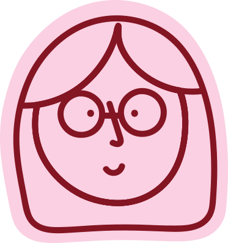
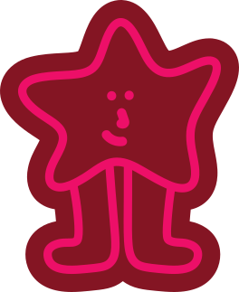
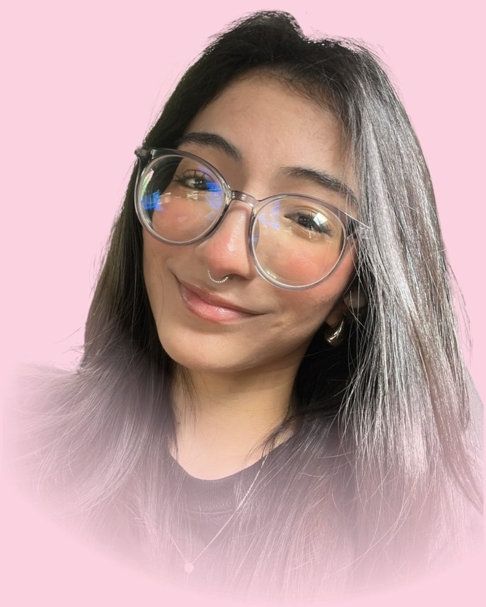

“Andrea aprende muy rápido y la forma en la que ha adaptado los pocos recuerdos que tenía la marca ha ido impactando la forma de explotar un solo logo y volverlo branding completo.”
- Proyecto
- Delia's Place · Branding, packaging y piezas comerciales


Creemos diseño que conecte tu marca con experiencias
Portafolio de proyectos gráficos, redes sociales, fotografía y material comercial. Diseño visual, contenido digital y branding aplicado a marcas gastronómicas y de belleza.

Soy diseñadora gráfica enfocada en la creación de contenido visual para marcas comerciales, especialmente en rubros gastronómicos, belleza y lifestyle. Mi trabajo combina dirección visual, diseño para redes sociales, fotografía de producto y piezas impresas para construir una comunicación coherente, atractiva y funcional.
Ayudo a pequeñas y medianas empresas a construir una identidad visual coherente y auténtica, reflejando su esencia y valores en cada pieza gráfica.
Encargado del manejo y desarrollo de contenido digital para redes sociales, incluyendo fotografía, producción de video y diseño de artes gráficas. Creación de contenido visual para campañas, promociones y fortalecimiento de la identidad de marca en plataformas digitales.
Responsable de la creación de contenido visual y audiovisual, incluyendo producción de videos, diseño de artes publicitarios y contenido para redes sociales, enfocado en fortalecer la presencia digital e identidad visual de la marca.
(Haz clic en una tarjeta para ver el comentario completo)
“Andrea aprende muy rápido y la forma en la que ha adaptado los pocos recuerdos que tenía la marca ha ido impactando la forma de explotar un solo logo y volverlo branding completo.”
“Andrea ha sido un elemento clave para el desarrollo de Crisol Taquería Urbana, su atención al detalle ha ayudado a desarrollarla y pulirla. Su creatividad siempre ha brillado y se ha hecho notar a través de su trabajo. Crisol no tendría la identidad que tiene sin Andrea.”
(Pasa el cursor sobre un folder para ver los archivos; haz clic para abrir la categoría)
Cuéntame sobre tu marca y lo que necesitas: juntas definimos el alcance, desde una pieza puntual hasta una identidad visual completa.
Escríbeme